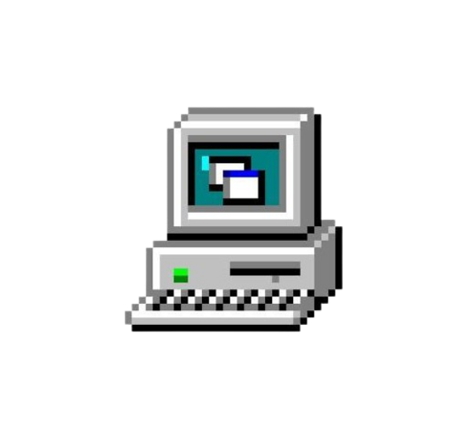
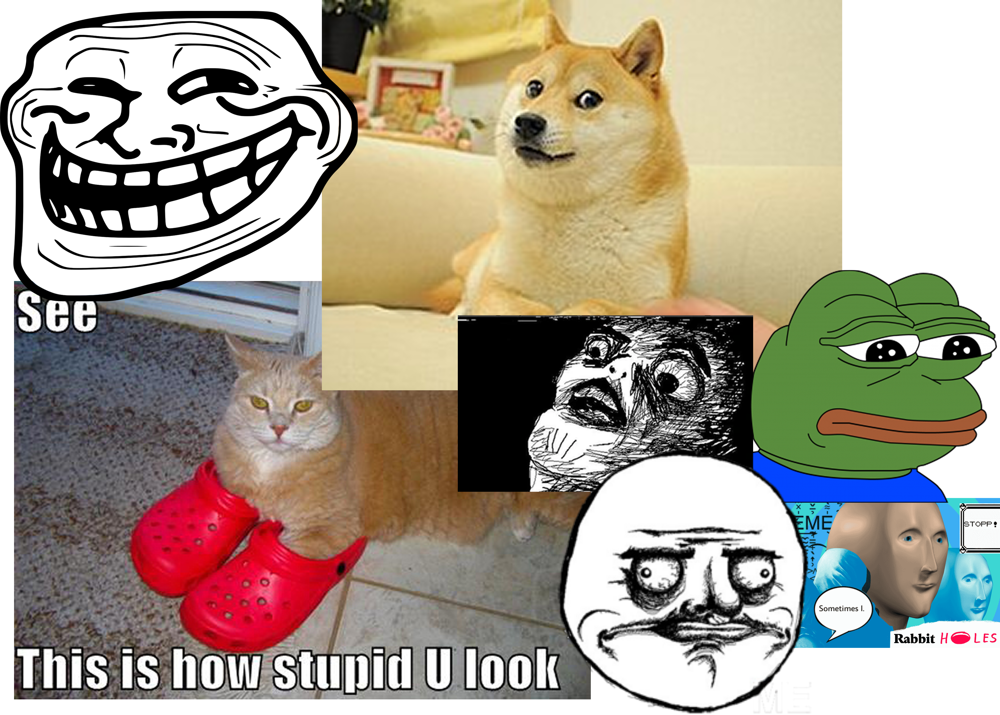
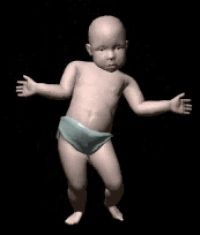
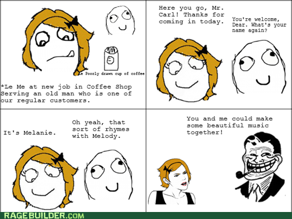
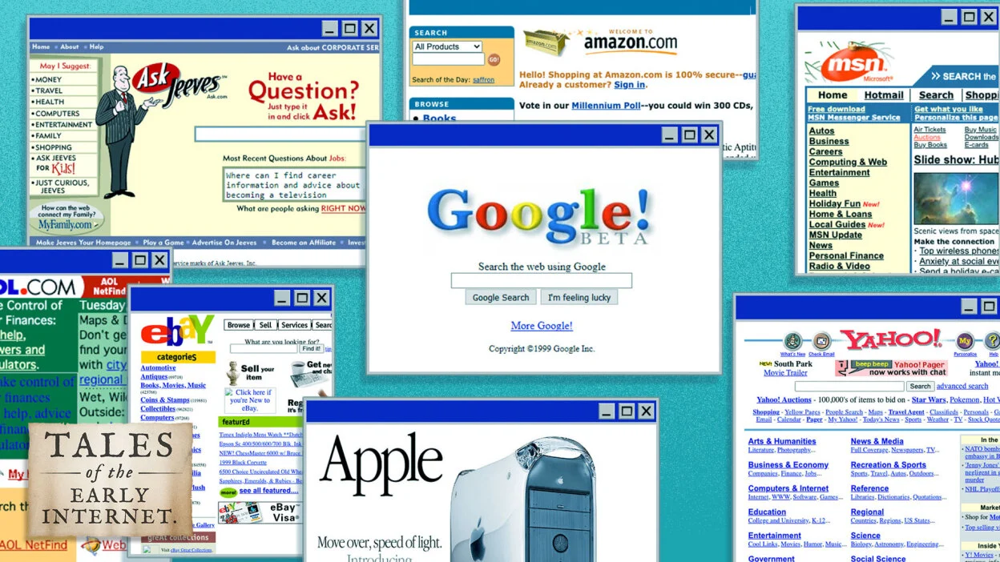

Artifact #001
Doge, 2013The famous Shiba Inu meme known for its humorous internal monologue captions.

Museum of Forgotten Internet Culture
Explore how internet humor evolved from early image macros into a universal language of communication.





Some of the greatest memes that defined internet culture from the museum's collection.
The famous Shiba Inu meme known for its humorous internal monologue captions.

An image macro representing absurdly unfortunate life events and unlucky situations.
One of the internet's most famous prank formats.